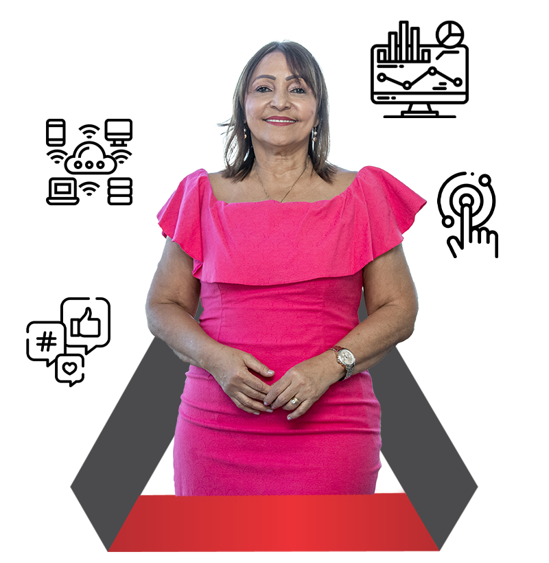

Consultoria empresarial
Gestão, planejamento, produtividade, auditoria, cálculos judiciais e soluções para pequenas empresas.
Conversar sobre consultoria ↗Consultoria empresarial · Recife
A Sinergia atende empresas de diferentes portes e segmentos com serviços de consultoria, contabilidade empresarial e Business Intelligence.
Conhecer os serviços ↓
25+anos de atuação
informados pela empresa
01 / Empresa
A empresa apresenta uma atuação voltada à organização da gestão, ao acompanhamento contábil e ao uso de dados. O objetivo desta página é tornar esses serviços fáceis de encontrar e entender.
02 / Serviços
Gestão, planejamento, produtividade, auditoria, cálculos judiciais e soluções para pequenas empresas.
Conversar sobre consultoria ↗BPO contábil, contabilidade consultiva, cálculos judiciais, abertura ou transferência de empresa e serviços adicionais.
Conversar sobre contabilidade ↗Estruturação de informações para acompanhamento gerencial, análise e visualização em diferentes dispositivos.
Conversar sobre dados ↗03 / Experiência
“Nossa relação de parceria dura mais de 10 anos. Nesse período realizamos dezenas de projetos.”Marcelo Galvão · Diretor Executivo
“A consultoria contribuiu para a implantação do eSocial, com capacitações, mapeamento de processos e suporte.”Joseane · Gerente de Recursos Humanos
“Trabalhamos com a Sinergia há mais de 20 anos em auditorias, processos, monitoramento e orçamento.”Bruno Tude · Diretor Geral
Depoimentos reproduzidos em versão resumida a partir do site público. Uso externo depende de confirmação e autorização.
04 / Conteúdo
Os artigos deixam de aparecer como uma lista isolada. Cada tema pode apoiar uma página de serviço e responder a uma dúvida real antes do contato.
05 / Contato
Escolha uma frente para que a conversa já comece com o assunto identificado.
Rua Senador José Henrique, 231